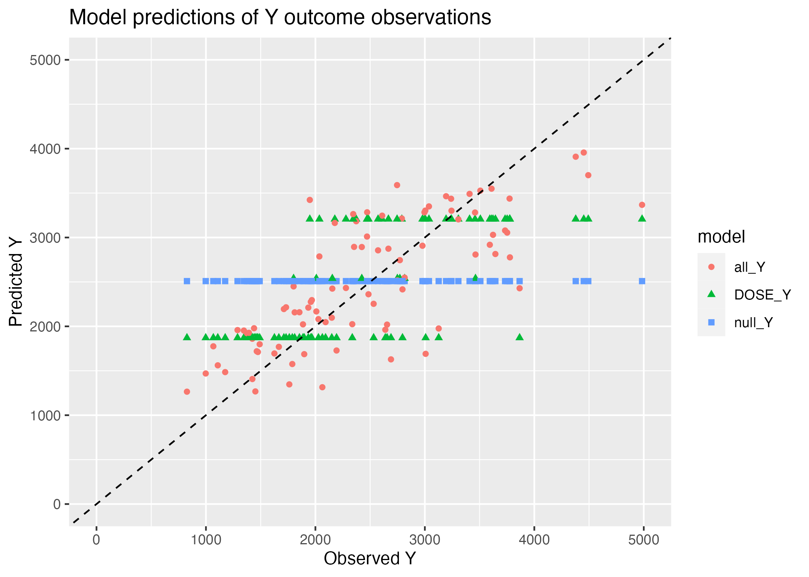

library(readr) # to load in the data
library(here) # to load in the data
library(ggplot2) # to create visualizations
library(dplyr) # for data processing/wrangling
library(gtsummary) # to create summary tables
library(knitr) # to create summary tables
library(tidymodels) # to fit models
library(pROC) # to find the ROC curve Fitting Exercise
This is an exercise to understand tidymodels better. We will use data on a drug candidate called Mavoglurant. The data is store as a .csv file, and it was downloaded from the original Github repository.
Load all packages for the exercise
Data
mavo <- read_csv(here("fitting-exercise", "Mavoglurant_A2121_nmpk.csv"))Data processing and exploration
We can create a quick visual of the data by plotting DV, the outcome variable, over time. We will stratify by dose and use ID as a grouping factor. The line graph is busy and not particularly helpful. It could be useful to zoom in and limit the time to 25 hours because most of the variation occurs before that threshold.
# plot DV as a function of TIME, stratified by DOSE and grouped by ID
mavo %>%
ggplot(aes(x=TIME, y=DV, group= as.factor(ID), color = as.factor(DOSE))) +
geom_line() +
facet_wrap( ~ DOSE, scales = "free_y")
This line graph is strongly skewed to the right with the highest drug concentration values DV being observed within the first 2 hours. As time progresses, the drug concentration sharply decreases until it reaches 0 around 48 hours.
As we look closer, some individuals received the drug more than once and have observations for both OCC=1 and OCC=2. We will only include participants who received the drug once to keep this analysis manageable.
# filter for those with one drug dosage
mavo2 <- mavo %>%
filter(OCC == 1)
# check the filtering worked
summary(mavo2$OCC) Min. 1st Qu. Median Mean 3rd Qu. Max.
1 1 1 1 1 1 All individuals have an entry at time 0 that has DV=0 and a non-zero entry for the AMT variable. The dosing entry for everyone is located in the AMT variable. All other entries are the time-series values for the drug concentration. We will create a new value for the total amount of drug for each individual by adding all the DV values. This approach should not be used outside of this practice example because individuals may have various amounts of observations for this variable. A better approach would be using integration to get the area under the curve with a simple trapezoid rule, but we will keep things simple here. Once we create the new total drug concentration variable Y for those with time that does not equal zero and for those with time that does equal zero, we combine the datasets, so there is a single dataset with TIME=0 for everybody.
# exclude individuals with TIME = 0 and create new variable Y as the sum of DV per individual
mavo3 <- mavo2 %>%
filter(TIME != 0) %>%
group_by(ID) %>% # this line allows the calculation to be done per individual
reframe(Y = sum(DV))
# keep individuals with TIME = 0 only
mavo4 <- mavo2 %>%
filter(TIME == 0)
# combine the two datasets
mavo5 <- left_join(mavo4, mavo3, by = "ID")We only need a few of these variables to create our model. We will slim down the dataset to only include Y, DOSE, AGE, SEX, RACE, WT, and HT. It will also be beneficial for the RACE and SEX variables to be factors.
mavo5 <- mavo5 %>%
select(Y, DOSE, AGE, SEX, RACE, WT, HT) %>%
mutate(SEX = as.factor(SEX),
RACE = as.factor(RACE))Exploratory Data Analysis
Summary Tables
To get a better understanding of the data, I made a simple summary table to examine the distribution for each of the variables.
# create simple summary table
summary <- mavo5 %>%
tbl_summary()
summary| Characteristic | N = 1201 |
|---|---|
| Y | 2,349 (1,701, 3,050) |
| DOSE | |
| 25 | 59 (49%) |
| 37.5 | 12 (10%) |
| 50 | 49 (41%) |
| AGE | 31 (26, 40) |
| SEX | |
| 1 | 104 (87%) |
| 2 | 16 (13%) |
| RACE | |
| 1 | 74 (62%) |
| 2 | 36 (30%) |
| 7 | 2 (1.7%) |
| 88 | 8 (6.7%) |
| WT | 82 (73, 90) |
| HT | 1.77 (1.70, 1.81) |
| 1 Median (IQR); n (%) | |
The average total dose concentration across the 120 observations is 2,349. Dosage is split into three discrete options: 25, 37.5, and 50. Almost 50% of the observations took the 25 unit dose and 41% took the 50 unit dose. The average age is 31 years, and the average weight is 82 units. The average height is 1.77, which must be stored in meters. Sex is very unevenly distributed with one gender accounting for 87% of observations. Race is also unevenly distributed with 62% of observations accounted for by one race.
I created another table that summarized the numeric variables by SEX because I noticed that the distribution was so uneven. I wanted to examine the differences in the numeric variables by sex.
# create summary table of numeric variables by SEX
numtable<- mavo5 %>%
group_by(SEX) %>%
summarize(across(c(Y:AGE, WT, HT), mean))
kable(numtable)| SEX | Y | DOSE | AGE | WT | HT |
|---|---|---|---|---|---|
| 1 | 2477.643 | 37.01923 | 31.79808 | 84.09808 | 1.779333 |
| 2 | 2235.874 | 32.81250 | 40.81250 | 72.51875 | 1.626908 |
For whichever sex is denoted by 1, the average total drug concentration is higher at 2477.643 units compared to 2235.874 for sex 2. DOSE, HT, and WT also have higher averages among the SEX=1 group, so I hypothesize that 1 represents males and 2 represents females. It is interesting that the average age among the SEX=2 group is 9 years older compared to the SEX=1 group.
Exploratory Graphs
I will create histograms to explore each of the numeric variables to understand their distributions better.
# histogram of total drug concentration `Y`
plot1 <- mavo5 %>%
ggplot(aes(x= Y)) +
geom_histogram() +
labs(x="Total Drug Concentration", y="Frequency", title = "Distribution of Total Drug Concentration")
plot1
Plot 1 reveals that total drug concentration is almost normally distributed with a few trailing outliers that are greater than 4000 units. The lowest total drug concentration is around 750 units, and the highest outliter is about 5600 units. The majoirty of observations fall between 1000 and 4000 units.
# histogram of DOSE
plot2 <- mavo5 %>%
ggplot(aes(x= DOSE)) +
geom_histogram() +
labs(x="Mavoglurant Dosage", y="Frequency", title = "Distribution of Dosage")
plot2
Plot 2 reveals that there are three distinct options for Mavoglurant dosage around 25, 37.5, and 50 units. Almost half of the observations take the 25 unit dosage, and the 37.5 unit dosage is the most uncommmon.
# histogram of AGE
plot3 <- mavo5 %>%
ggplot(aes(x= AGE)) +
geom_histogram() +
labs(x="Age", y="Frequency", title = "Distribution of Age")
plot3
Plot 3 reveals that age is not normally distributed. The two ages accounting for the most observations are around 26 and 27 years. There are also peaks in the histogram at 37 years and 30 years. This graph shows random variation in the age of the 120 observations.
# histogram of height `HT`
plot4 <- mavo5 %>%
ggplot(aes(x= HT)) +
geom_histogram() +
labs(x="Height", y="Frequency", title = "Distribution of Height")
plot4
Plot 4 reveals height to be approximately normally distributed with a peak around 1.8 units. There are a few low outliers between 1.5 and 1.6 units, but the majority of observations have a heigt between 1.62 and 1.91 unit.
# histogram of weight `WT`
plot5 <- mavo5 %>%
ggplot(aes(x= WT)) +
geom_histogram() +
labs(x="Weight", y="Frequency", title = "Distribution of Weight")
plot5
Plot 5 reveals that weight is approximately normally distributed with a peak around 82 units. The lowest weight is about 55 units, and the highest weight is about 116 units. Most of the observations fall between 68 and 100 units.
It is also important to explore the distributions of the two categorical variables using bar graphs: RACE and SEX.
# bar graph of race variable
plot6 <- mavo5 %>%
ggplot(aes(x= RACE)) +
geom_bar() +
labs(x="Race", y="Frequency", title = "Distribution of Race")
plot6
Plot 6 shows that race is denoted as four discrete numeric options: 1, 2, 7, and 88. Over 70 observations are accounted for in the RACE=1 category which is almost twice as large as the RACE=2 category. RACE=7 has the fewest observations, ann RACE=88 has about 8 observations. It is almost impossible to determine which race is represented by each category, but RACE=88 probably accounts for missing information.
# bar graph of sex variable
plot7 <- mavo5 %>%
ggplot(aes(x= SEX)) +
geom_bar() +
labs(x="Sex", y="Frequency", title = "Distribution of Sex")
plot7
Plot 7 confirms what we already know about sex being unevenly distributed. SEX=1 accounts for over 100 observations, which is almost 5 times as many observations included in the SEX=2 category.
I will move on to creating scatterplots and boxplots to examine the relationship between the main outcome of interest Y and predictor variables including DOSE, AGE, HT, WT, RACE, and SEX.
# scatter plot of dosage and total drug concentration
plot8 <- mavo5 %>%
mutate(DOSE = as.factor(DOSE)) %>%
ggplot(aes(x= DOSE, y=Y)) +
geom_boxplot() +
labs(x="Dose", y="Total Drug Concentration", title = "Dosage Related to Total Drug Concentration")
plot8
I converted the DOSAGE variable to a factor variable here because I felt like a boxplot would display the information better than a scatterplot. The boxplot can be used to determine that the 50 unit dose accounts for the highest average total drug concentration. Total drug concentration decreases as dosage decreases to 37.5 and 25 units, which makes sense intuitively. There are a few outliers in each dosage category, but they do not seem to affect the overall trend.
# scatter plot of age and total drug concentration
plot9 <- mavo5 %>%
ggplot(aes(x= AGE, y=Y)) +
geom_point() +
labs(x="Age", y="Total Drug Concentration", title = "Age Related to Total Drug Concentration")
plot9
Plot 9 shows that there is no correlation between age and total drug concentration. The points appear to be randomly distributed without a clear trend of association.
# scatter plot of height and total drug concentration
plot10 <- mavo5 %>%
ggplot(aes(x= HT, y=Y)) +
geom_point() +
labs(x="Height", y="Total Drug Concentration", title = "Height Related to Total Drug Concentration")
plot10
Plot 10 shows that height is not correlated with total drug concentration either. The points appear to be randomly distributed with no clear trend of association.
# scatter plot of weight and total drug concentration
plot11 <- mavo5 %>%
ggplot(aes(x= WT, y=Y)) +
geom_point() +
labs(x="Weight", y="Total Drug Concentration", title = "Weight Related to Total Drug Concentration")
plot11
Plot 11 contains a lot of variation, but there appears to be weak correlation between these two variables. There seems to be a negative trend between weight and total drug concentration. As weight increases, total drug concentration decreases.
# boxplot of race and total drug concentration
plot12 <- mavo5 %>%
ggplot(aes(x= RACE, y=Y)) +
geom_boxplot() +
labs(x="Race", y="Total Drug Concentration", title = "Race Related to Total Drug Concentration")
plot12
Plot 12 shows that there is minimal variation in total drug concentration across racial categories because the averages appear to be within 100 units for all 4 categories. The interquartile range for RACE=1 appears to be the largest, and this category has the highest maximum total drug concentration as well. The interquartile range for RACE=7 is the smallest, which means there is the least variation in total drug concentration in this category. There are only 2 outliers according to this plot, one in RACE=1 and another in RACE=88.
plot13 <- mavo5 %>%
ggplot(aes(x= SEX, y=Y)) +
geom_boxplot() +
labs(x="Sex", y="Total Drug Concentration", title = "Sex Related to Total Drug Concentration")
plot13
Plot 13 shows a difference in total drug concentration based on sex. The average total concentration for SEX=1 is higher than in SEX=2. The interquartile range apppears to be the same for both sexes, and there is one outlier in each category.
Model Fitting
Linear model with continuous outcome
The first model we are interested in fitting is a linear model with the continuous outcome Y and the main predictor of interest DOSE. I will use simple linear regression with the default lm method for ordinary least squares.
# create a linear model with main predictor only
lm_mod <- linear_reg() #specify the type of model
mavo_fit1 <- lm_mod %>%
fit(Y ~ DOSE, data = mavo5) #estimate/train the model
tidy(mavo_fit1) #generate clean output with estimates and p-values# A tibble: 2 × 5
term estimate std.error statistic p.value
<chr> <dbl> <dbl> <dbl> <dbl>
1 (Intercept) 323. 199. 1.62 1.07e- 1
2 DOSE 58.2 5.19 11.2 2.69e-20Based on the linear regression model, the total drug concentration increases by 58.21 units with every 1 unit increase in dosage. There is a statistically significant positive association between the two variables based on the tiny p-value of 2.69e-20.
The second model we are interested in is also a linear model, but we want to examine the continuous outcome with all six predictors. I will use multiple linear regression with the same default lm method.
# create a linear model with all predictors
lm_mod <- linear_reg() #specify the type of model
mavo_fit2 <- lm_mod %>%
fit(Y ~ DOSE + AGE + HT + WT + RACE + SEX, data = mavo5) #estimate/train the model
tidy(mavo_fit2) #generate clean output with estimates and p-values# A tibble: 9 × 5
term estimate std.error statistic p.value
<chr> <dbl> <dbl> <dbl> <dbl>
1 (Intercept) 3387. 1835. 1.85 6.76e- 2
2 DOSE 59.9 4.88 12.3 2.05e-22
3 AGE 3.16 7.82 0.403 6.88e- 1
4 HT -748. 1104. -0.678 4.99e- 1
5 WT -23.0 6.40 -3.60 4.71e- 4
6 RACE2 155. 129. 1.21 2.31e- 1
7 RACE7 -405. 448. -0.904 3.68e- 1
8 RACE88 -53.5 245. -0.219 8.27e- 1
9 SEX2 -358. 217. -1.65 1.02e- 1The multiple linear regression yields a slightly larger coefficient for the DOSE variable than the simple linear regression did. As dosage increases by 1 unit, total drug concentration increases by 59.934 units according to this model. This pattern makes sense because a higher dosage of the drug is expected to create a higher total drug concentration in the body. Age is positively associated with total drug concentration because as age increases by 1 year, total drug concentration increases by 3.155 years. This pattern is expected because metabolism slows as age increases, so it makes sense that the body would retain higher levels of drug concentration if it is metabolizing the drug at a slower rate. Height has a negative correlation with total drug concentration based on a coefficient estimate of -748.487. Weight is also negatively correlated, but it has a much smaller coefficient of -23.047. These trends are intuitive given that larger bodies are able to metabolize quicker than smaller bodies on average, so taller and heavier people would have lower total drug concentration. The model chose RACE=1 as the comparison category, so the total drug concentration increases by 155.034 units when RACE=2 compared to RACE=1. The total drug concentration decreases by 405.32 units when RACE=7 compared to RACE=1. There is also a negative association between RACE=88 and total drug concentration compared to RACE=1 based on the coefficient of -53.505. It is harder to interpet these trends since we do not know which race is associated with each category. Lastly, total drug concentration decreases by 357.734 units when SEX=2 compared to when SEX=1. Males and femaless have completely different metabolism rate, so it makes sense that this trend exists. All of these associations are statistically significant because the p-values are all less than 0.001.
Testing linear model performance
To determine how well these models perform, we will compute the RMSE and R squared metrics. To find RMSE, I made predictions using each model to compare to the real data stored in mavo5. I selected the prediction column and bound it to the column with true values of Y from the original data to create a new data frame. I used the rmse() function from the yardstick package in tidymodels to find the RMSE values. R squared is calculated from the same prediction and truth values using the rsq() function.
# create predictions using the simple linear regression model
predictions1 <- predict(mavo_fit1, new_data = mavo5) %>%
select(.pred)
# create a data frame with the predictions and true values of Y
data1 <- bind_cols(predictions1, mavo5$Y) %>%
rename(Y = "...2")
# find RMSE and R squared to determine model fit
rmse1<- rmse(data1, truth = Y, estimate = .pred)
rsq1 <- rsq(data1, truth = Y, estimate = .pred)
print(rmse1)# A tibble: 1 × 3
.metric .estimator .estimate
<chr> <chr> <dbl>
1 rmse standard 666.print(rsq1)# A tibble: 1 × 3
.metric .estimator .estimate
<chr> <chr> <dbl>
1 rsq standard 0.516# create predictions using the multiple linear regression model
predictions2 <- predict(mavo_fit2, new_data = mavo5) %>%
select(.pred)
# create a data frame with the predictions and true values of Y
data2 <- bind_cols(predictions2, mavo5$Y) %>%
rename(Y = "...2")
# find RMSE and R squared to determine model fit
rmse2<- rmse(data2, truth = Y, estimate = .pred)
rsq2<- rsq(data2, truth = Y, estimate = .pred)
print(rmse2)# A tibble: 1 × 3
.metric .estimator .estimate
<chr> <chr> <dbl>
1 rmse standard 591.print(rsq2)# A tibble: 1 × 3
.metric .estimator .estimate
<chr> <chr> <dbl>
1 rsq standard 0.619The RMSE for the simple linear regression model is 666.4618, which is much higher than the RMSE of 590.8535 for the multiple linear regression model. The model with all of the predictors is a better fit for the data. The R squared value for the multiple linear regression model is higher than the simple linear regression model. All the predictors account for 61.93% of variation in the graph, while the DOSE variable alone only accounts for 51.56% of the variation. Overall, the multiple linear regression model is the better choice.
Logistic model with binary outcome
We will know consider SEX as the outcome of interest for the sake of practicing modeling with categorical outcomes. First, we will use logistic regression to model SEX using the main predictor, DOSE.
# create a logistic regression model with main predictor only
log_mod <- logistic_reg() #specify the type of model
mavo_fit3 <- log_mod %>%
fit(SEX ~ DOSE, data = mavo5) #estimate/train the model
tidy(mavo_fit3) #generate clean output with estimates and p-values# A tibble: 2 × 5
term estimate std.error statistic p.value
<chr> <dbl> <dbl> <dbl> <dbl>
1 (Intercept) -0.765 0.854 -0.896 0.370
2 DOSE -0.0318 0.0243 -1.31 0.192#exponentiate coefficient estimate
exp(-0.03175443)[1] 0.9687444The logistic regression model shows a negative relationship between SEX and DOSE. The coefficient estimate is on the log odds scale, so it must be exponentiated before interpretation. The odds of SEX being SEX=2 increase multiplicatively by a factor of 0.9687 for every increase in dosage. This interpretation does not make a ton of sense logically, but it is important to remember that coefficient estimates are on the log odds scale.
Next, we will fit a model for SEX with all of the predictors.
# create a logistic regression model with all predictors
log_mod <- logistic_reg() #specify the type of model
mavo_fit4 <- log_mod %>%
fit(SEX ~ DOSE + Y + AGE + HT + WT + RACE, data = mavo5) #estimate/train the model
tidy(mavo_fit4) #generate clean output with estimates and p-values# A tibble: 9 × 5
term estimate std.error statistic p.value
<chr> <dbl> <dbl> <dbl> <dbl>
1 (Intercept) 60.3 18.0 3.34 0.000824
2 DOSE -0.0308 0.0776 -0.396 0.692
3 Y -0.00104 0.000963 -1.08 0.280
4 AGE 0.0834 0.0607 1.37 0.170
5 HT -33.2 11.1 -3.00 0.00274
6 WT -0.0628 0.0794 -0.791 0.429
7 RACE2 -1.93 1.37 -1.40 0.161
8 RACE7 0.118 3.85 0.0306 0.976
9 RACE88 -1.50 2.19 -0.683 0.494 # exponentiate coefficient estimates
exp(-0.03075591)[1] 0.9697122exp(-0.00104044)[1] 0.9989601exp(-33.19601486)[1] 3.829605e-15This model shows negative associations between most of the variables and the outcome of SEX. The dose coefficient estimate changed only slightly with the addition of the other predictors, and now dosage is associated with a 0.9697 multiplicative effect on the odds of SEX=2. Total drug concentration Y appears to have the smallest effect on the outcome, which is to be expected because the total concentration of the drug in your body will have no effect on your sex. Regardless, for every 1 unit increase in total drug concentration, the odds of SEX=2 increase multiplicatively by a factor of 0.9989, which is essentially null. Height has the strongest relationship with the outcome variable, and that trend is expected because males are taller on average than females, which makes height the best predictor of the binary SEX outcome. As height increases by 1 unit, the odds of SEX=2 increase multiplicatively by a factor of 3.829e-15. Weight has a significantly smaller effect on SEX that is not statistically significant, but the same logic as the height variable applies here. It makes sense that this trend would be weaker because weight fluctuates muchh more than height, regardless of sex. While it is difficult to interpret the change in odds in this situation, the overall trends make sense intuitively.
Testing logistic model performance
For both models, we will assess the fit using accuracy and ROC-AUC metrics. The setup is similar to calculating RMSE and R squared for linear models. I found the predictions for the SEX variable first. I created a new dataset with the predictions and the true value from the original dataset. The accuracy() function uses the dataset, truth, and estimate arguments.
# make predictions using the logistic model with main predictor only
predictions3 <- predict(mavo_fit3, new_data = mavo5) %>%
select(.pred_class)
# create a data frame with the predicted and true values
data3 <- bind_cols(predictions3, mavo5$SEX) %>%
rename(SEX = "...2")
# find accuracy of the first logistic model
acc1 <- accuracy(data3, truth = SEX, estimate = .pred_class)
acc1# A tibble: 1 × 3
.metric .estimator .estimate
<chr> <chr> <dbl>
1 accuracy binary 0.867# make predictions using the logistic model with all predictors
predictions4 <- predict(mavo_fit4, new_data = mavo5) %>%
select(.pred_class)
# create a data frame with the predicted and true values
data4 <- bind_cols(predictions4, mavo5$SEX) %>%
rename(SEX = "...2")
# find accuracy of the second logistic model
acc2 <- accuracy(data4, truth = SEX, estimate = .pred_class)
acc2# A tibble: 1 × 3
.metric .estimator .estimate
<chr> <chr> <dbl>
1 accuracy binary 0.942The accuracy for the logistic model with the main predictor only is 0.867, and the accuracy for the model with all predictors is 0.942. Once again,the model with all predictors is the better choice.
Ideally, we would use the roc_auc() function from the tidymodels package to find the area under the curve. I received persistent errors when I tried this approach about not being able to rename variables in this context. I removed the variable names from my prediction data set and tried to call the columns in multiple formats, but I could not get this function to run. Instead, I used the pROC package to find the ROC curve first and the area under the curve second.
# create data set with truth and prediction variables for model with main predictor only
data4 <- data.frame(truth = mavo5$SEX,
estimate = as.numeric(predictions3$.pred_class))
# find the ROC curve
roc_curve1 <- roc(data4$truth, data4$estimate)
# calculate area under the curve score
roc_auc1 <- auc(roc_curve1)
roc_auc1Area under the curve: 0.5# create data set with truth and prediction variables for model with main predictor only
data5 <- data.frame(truth = mavo5$SEX,
estimate = as.numeric(predictions4$.pred_class))
# find the ROC curve
roc_curve2 <- roc(data5$truth, data5$estimate)
# calculate area under the curve score
roc_auc2 <- auc(roc_curve2)
roc_auc2Area under the curve: 0.8606The area under the curve for the logistic regression model with the main predictor only is 0.5 compared to an AOC of 0.861 for the second model containing all the predictors. The second model is the better choice based on this metric.
After receiving feedback from Dr. Handel, he provided us with an example of how to find the area under the curve using the function that I attempted the first time.
# fit the first logistic model
logfit1 <- log_mod %>% fit(SEX ~ DOSE, data = mavo5)
# find area under the curve
m1_auc <- logfit1 %>%
predict(mavo5, type = "prob") %>%
bind_cols(mavo5) %>%
roc_auc(truth = SEX, .pred_1)
print(m1_auc)# A tibble: 1 × 3
.metric .estimator .estimate
<chr> <chr> <dbl>
1 roc_auc binary 0.592# fit the second logistic model
logfit2 <- log_mod %>% fit(SEX ~ ., data = mavo5)
# find the area under the curve
m2_auc <- logfit2 %>%
predict(mavo5, type = "prob") %>%
bind_cols(mavo5) %>%
roc_auc(truth = SEX, .pred_1)
print(m2_auc)# A tibble: 1 × 3
.metric .estimator .estimate
<chr> <chr> <dbl>
1 roc_auc binary 0.980Module 10 exercise
I will set a seed to ensure reproducibility when using random numbers.
# choose random seed number for the exercise
rngseed = 1234Data prep
I will remove the RACE variable because there are strange values for missingness included in it.
# remove RACE variable
mavo6 <- mavo5 %>%
select(-RACE)I want to split the data into a 75% train and a 25% test set randomly, which is why I will set the seed. I will follow the tidymodels textbook example for splitting data and testing it.
# set the random seed
set.seed(rngseed)
#load packages for splitting the data
library("rsample")
# put 75% into the training data
datasplit <- initial_split(mavo6, prop = 3/4)
# create data frames for the two sets
train_data <- training(datasplit)
test_data <- testing(datasplit)Model Fitting
mavo_fit1 is the object containing the simple linear regression with DOSEas the only predictor. mavo_fit2 is the object containing the multiple linear regression with all predictors. I will modify each of these objects to only use the training data set for fitting.
# simple linear regression model
lm_mod <- linear_reg() #specify the type of model
train_fit1 <- lm_mod %>%
fit(Y ~ DOSE, data = train_data) #estimate/train the model
tidy(train_fit1) #generate clean output with estimates and p-values# A tibble: 2 × 5
term estimate std.error statistic p.value
<chr> <dbl> <dbl> <dbl> <dbl>
1 (Intercept) 535. 244. 2.19 3.08e- 2
2 DOSE 53.4 6.29 8.50 4.41e-13# multiple linear regression model
train_fit2 <- lm_mod %>%
fit(Y ~ . , data = train_data) #estimate/train the model
tidy(mavo_fit2) #generate clean output with estimates and p-values# A tibble: 9 × 5
term estimate std.error statistic p.value
<chr> <dbl> <dbl> <dbl> <dbl>
1 (Intercept) 3387. 1835. 1.85 6.76e- 2
2 DOSE 59.9 4.88 12.3 2.05e-22
3 AGE 3.16 7.82 0.403 6.88e- 1
4 HT -748. 1104. -0.678 4.99e- 1
5 WT -23.0 6.40 -3.60 4.71e- 4
6 RACE2 155. 129. 1.21 2.31e- 1
7 RACE7 -405. 448. -0.904 3.68e- 1
8 RACE88 -53.5 245. -0.219 8.27e- 1
9 SEX2 -358. 217. -1.65 1.02e- 1Model performance assessment 1
I will compute predictions for both models to find the RMSE metric. I will also compute the RMSE of a null model, which would just predict the mean outcome for each observation without using any predictor information.
# create predictions using the simple linear regression model
trainpred1 <- predict(train_fit1, new_data = train_data) %>%
select(.pred)
# create a data frame with the predictions and true values of Y
train1 <- bind_cols(trainpred1, train_data$Y) %>%
rename(Y = "...2")
# find RMSE to determine model fit
trainrmse1<- rmse(train1, truth = Y, estimate = .pred)
print(trainrmse1)# A tibble: 1 × 3
.metric .estimator .estimate
<chr> <chr> <dbl>
1 rmse standard 703.# create predictions using the multiple linear regression model
trainpred2 <- predict(train_fit2, new_data = train_data) %>%
select(.pred)
# create a data frame with the predictions and true values of Y
train2 <- bind_cols(trainpred2, train_data$Y) %>%
rename(Y = "...2")
# find RMSE to determine model fit
trainrmse2<- rmse(train2, truth = Y, estimate = .pred)
print(trainrmse2)# A tibble: 1 × 3
.metric .estimator .estimate
<chr> <chr> <dbl>
1 rmse standard 627.I will also compute the RMSE of a null model, which would just predict the mean outcome for each observation without using any predictor information.
# create a null model
null_model <- null_model(mode = "regression") %>%
set_engine("parsnip") %>%
fit(Y ~ 1, data = train_data)
# create predictions using the null model
nullpred <- predict(null_model, new_data = train_data) %>%
select(.pred)
# create a data frame with the predictions (means) and true values of Y
trainingnull <- bind_cols(nullpred, train_data$Y) %>%
rename(Y = "...2")
# find RMSE to determine model fit
predrmse<- rmse(trainingnull, truth = Y, estimate = .pred)
print(predrmse)# A tibble: 1 × 3
.metric .estimator .estimate
<chr> <chr> <dbl>
1 rmse standard 948.The RMSE for the null model is 948.356, which is much higher than an RMSE of 702.8078 for the simple linear model and 627.4408 for the multiple linear model. Since the model with all predictors has the lowest RMSE metric, it is clear that the multiple linear regression model is performing the best because it has the lowest difference between the values predicted by the model and the values observed. According to these metrics, the simple linear model performs better than the null model, so it is still useful as well.
Model Performance assessment 2
I will use cross-validation as another method of assessing the model performance. I will follow the tidymodels textbook example for creating a 10-fold cross-validation.
# set the seed for reproducibility
set.seed(rngseed)
# create 10 folds
folds <- vfold_cv(train_data, v=10)
# load packages to create a workflow
library(parsnip)
# define your model specification
lm_spec <- linear_reg() %>%
set_engine("lm")
# initialize a workflow and fit it to the training data for the simple linear model
mavo_wf <- workflow() %>%
add_model(lm_spec) %>%
add_formula(Y~DOSE) %>% #specify the formula since we are not using a recipe
fit(data = train_data)
# resample the model
mavo_wf_rs <- mavo_wf %>%
fit_resamples(folds)
mavo_wf_rs# Resampling results
# 10-fold cross-validation
# A tibble: 10 × 4
splits id .metrics .notes
<list> <chr> <list> <list>
1 <split [81/9]> Fold01 <tibble [2 × 4]> <tibble [0 × 3]>
2 <split [81/9]> Fold02 <tibble [2 × 4]> <tibble [0 × 3]>
3 <split [81/9]> Fold03 <tibble [2 × 4]> <tibble [0 × 3]>
4 <split [81/9]> Fold04 <tibble [2 × 4]> <tibble [0 × 3]>
5 <split [81/9]> Fold05 <tibble [2 × 4]> <tibble [0 × 3]>
6 <split [81/9]> Fold06 <tibble [2 × 4]> <tibble [0 × 3]>
7 <split [81/9]> Fold07 <tibble [2 × 4]> <tibble [0 × 3]>
8 <split [81/9]> Fold08 <tibble [2 × 4]> <tibble [0 × 3]>
9 <split [81/9]> Fold09 <tibble [2 × 4]> <tibble [0 × 3]>
10 <split [81/9]> Fold10 <tibble [2 × 4]> <tibble [0 × 3]># collect the metrics from the model
collect_metrics(mavo_wf_rs)# A tibble: 2 × 6
.metric .estimator mean n std_err .config
<chr> <chr> <dbl> <int> <dbl> <chr>
1 rmse standard 691. 10 67.5 Preprocessor1_Model1
2 rsq standard 0.512 10 0.0592 Preprocessor1_Model1The RMSE for the simple linear model decreased to 690.5397679, which is less than 702.8078. The cross-validation method of testing the model shows that it performs better than the train/test splitting method did. The standard error for the RMSE is 67.495 when using the cross-validation method, which allows us to observe the variability in RMSE estimates. I will use the same number of folds from the previous model along with the same model specification.
# set the seed for reproducibility
set.seed(rngseed)
# initialize a workflow and fit it to the training data for the multiple linear model
mavo_wf2 <- workflow() %>%
add_model(lm_spec) %>%
add_formula(Y~DOSE + AGE + SEX + WT + HT) %>% #specify the formula since we are not using a recipe
fit(data = train_data)
# resample the model
mavo_wf_rs2 <- mavo_wf2 %>%
fit_resamples(folds)
# collect the metrics from the model
collect_metrics(mavo_wf_rs2)# A tibble: 2 × 6
.metric .estimator mean n std_err .config
<chr> <chr> <dbl> <int> <dbl> <chr>
1 rmse standard 646. 10 64.8 Preprocessor1_Model1
2 rsq standard 0.573 10 0.0686 Preprocessor1_Model1The RMSE for the model with all the predictors also decreased from when it was estimated with the test/training method to a value of 645.6909159. The standard error for the RMSE is 64.81927084, which is lower than the standard error of the RMSE for the simple linear model. The cross-validation test shows that the multiple linear regression model performs better in comparison to the simple linear regression model and itself according to the test/train method.
Nothing changes for the null model, which is to be expected because it is only predicting the average.
I will repeat this process using a different random seed to observe the changes in the RMSE values due to randomness in the data splitting.
# set new seed for reproducibility
set.seed(2468)
# resample the model with a different seed
mavo_wf_rs <- mavo_wf %>%
fit_resamples(folds)
mavo_wf_rs# Resampling results
# 10-fold cross-validation
# A tibble: 10 × 4
splits id .metrics .notes
<list> <chr> <list> <list>
1 <split [81/9]> Fold01 <tibble [2 × 4]> <tibble [0 × 3]>
2 <split [81/9]> Fold02 <tibble [2 × 4]> <tibble [0 × 3]>
3 <split [81/9]> Fold03 <tibble [2 × 4]> <tibble [0 × 3]>
4 <split [81/9]> Fold04 <tibble [2 × 4]> <tibble [0 × 3]>
5 <split [81/9]> Fold05 <tibble [2 × 4]> <tibble [0 × 3]>
6 <split [81/9]> Fold06 <tibble [2 × 4]> <tibble [0 × 3]>
7 <split [81/9]> Fold07 <tibble [2 × 4]> <tibble [0 × 3]>
8 <split [81/9]> Fold08 <tibble [2 × 4]> <tibble [0 × 3]>
9 <split [81/9]> Fold09 <tibble [2 × 4]> <tibble [0 × 3]>
10 <split [81/9]> Fold10 <tibble [2 × 4]> <tibble [0 × 3]># collect the metrics from the model
collect_metrics(mavo_wf_rs)# A tibble: 2 × 6
.metric .estimator mean n std_err .config
<chr> <chr> <dbl> <int> <dbl> <chr>
1 rmse standard 691. 10 67.5 Preprocessor1_Model1
2 rsq standard 0.512 10 0.0592 Preprocessor1_Model1# resample the model with a different seed
mavo_wf_rs2 <- mavo_wf2 %>%
fit_resamples(folds)
# collect the metrics from the model
collect_metrics(mavo_wf_rs2)# A tibble: 2 × 6
.metric .estimator mean n std_err .config
<chr> <chr> <dbl> <int> <dbl> <chr>
1 rmse standard 646. 10 64.8 Preprocessor1_Model1
2 rsq standard 0.573 10 0.0686 Preprocessor1_Model1I get slightly different values for both models. The simple linear regression model now has an RMSE of 690.5397670 and a standard error of 67.49509367, which shows more variance in the model than the previous time I ran it. The multiple linear regression model has an RMSE of 645.6909159 this time, and the standard error is 64.81927084. The conclusion about which model performs better remains the same: the multiple linear regression out-performs the simple linear regression. The pattern of the multiple linear regression model having a lower standard error and less variability also remains.
This section added by Cora Hirst R.
We would like to visualize the performance of the three models - a “null†model predicting the mean on the Y outcome, a model utilizing the variable DOSE to predict Y outcome, and a model utilizing all predictor variables (SEX, DOSE, AGE, WT, and HT) to predict outcome Y - by plotting their predicted values against the true Y observations.
The code chunk below generates a long-form dataframe of Y outcomes predicted by each model, where each observation contains the observed Y value and a model’s prediction for that observation. We plot the predictions against the observations for each Y value to get a sense of the models’ performances.
#model predictions dataframe wide
all_mod_preds = data.frame("observed_Y" = train_data$Y, "null_Y" = nullpred$.pred, "DOSE_Y" = trainpred1$.pred, "all_Y" = trainpred2$.pred)
#creating dataframe
all_mod_preds_long = all_mod_preds %>%
pivot_longer(cols = c("null_Y", "DOSE_Y", "all_Y"),
names_to = "model",
values_to = "outcome")
#plot observed values against predicted values
plot = ggplot() + geom_point(data = all_mod_preds_long, aes(x = observed_Y, y = outcome, shape = model, col = model)) +
xlim(c(0,5000)) +
ylim(c(0,5000)) +
geom_abline(linetype = "dashed") +
labs(x = "Observed Y", y = "Predicted Y", title = "Model predictions of Y outcome observations")
# Save Figure
figure_file = here("fitting-exercise", "mod_preds_plot.png")
ggsave(filename = figure_file, plot=plot) Saving 7 x 5 in imageWarning: Removed 3 rows containing missing values (`geom_point()`).
The null model only predicts a single value for all observations - the mean of the observations. Thus, we see only a horizontal line plotting Y predictions against Y observations for the null model (Figure 1). Similarly, we observe 3 horizontal lines representing the Y predictions made by the numeric variable DOSE - this is simply because DOSE only takes on 3 values, and thus, there are only 3 predicted Y outcomes by dose. The All_y multiple regression model, which uses all variables as predictors, contains outcomes with a much finer grained range of possible outcome values, solely because of the range of combinations of predictor variables (consider just that the predictor variables contain two continuous variables, HT and WT.)
There is still quite a bit of residual from this best-performing multiple regression model, all_Y, which we can observe as the extent of scatter abound the 1:1 line.
This scatter could be due solely to noisiness in the measurements, in which case we would not expect to see any pattern in our predictions. Here, however, we see that the predicted Y values appear to saturate at high Y observations - predictions are regularly less than observations at high values of Y. This could be indicative a pattern in the Y variable that, as Andreas puts it, out (linear multiple regression) model can’t explain.
Focusing on this multiple regression model, we can first attempt to identify a relationship between scatter and model predicted values by plotting our residuals (our measurement of “scatter”) against the model-predicted values (of course!). Here, we can observe whether there is some pattern in the range of predictions our model might be failing to accurately capture.
#using wide form dataframe to make residuals plot
plot = ggplot() + geom_point(data = all_mod_preds, aes(x = all_Y, y = all_Y - observed_Y)) +
ylim(c(-2500, 2500)) +
xlim(c(1000, 4000)) +
geom_hline(yintercept = 0)
# Save Figure
figure_file = here("fitting-exercise", "mod2_resids_plot.png")
ggsave(filename = figure_file, plot=plot) Saving 7 x 5 in imageFigure 2 reveals that there are more negative residuals (observation is greater than prediction) and of greater magnitude than positive residuals. Perhaps our linear model is missing some crucial predictor, or, our one/some/all of our predictors impact the outcome in a nonlinear way.
While we won’t be discerning between these two hypotheses now, it’s good to start building an intuition of how to improve our models based not only on their performance, but how their performance may indicate some natural phenomena we were previously naive to!
For now, however, we will be exploring ways to get a sense of the uncertainty in our model predictions.
Model Predictions and Uncertainty
Usually, linear models lend themselves to nice metrics which demosntrate the uncertainty in their estimates of the parameters. More comples and nonlinear models, however, often aren’t so generous. Another way to estimate uncertainty, however, is the “manual†or “brute-force†sort of way. Is it the most elegant? Ask a statistician. Does it work well? Absolutely - most of the time. This method is called “bootstrapping.”
We are going to give it a try on our linear model here, to provide us a nice framework for how bootstrapping works and what it tell us.
The logic behind bootstrapping is simple - we take a certain number of sample of the data, fit our models to the data, and examine the distributions of the estimated parameters. It’s somewhat similar to cross-validation, expect that cross-validation splits the entire dataset into k-subsets and trains/predicts models on each combination of \(k-1\) subsets to train and \(k\) subset to predict, while bootstrapping fits estimates to n randomly generated subsets (which can overlap). Thus, cross validation shows us how well a model can perform on unseen data, while boostrapping does not make predictions on unseen data and rather provides an estimate of how widely parameters estimated from subsets of the same data vary. (CV is good for model performance; bootstrapping is good for uncertainty. Obviously, the two goals are not mutually exclusive.)
And now that I’ve written all of this I see that Andreas also include a much nicer and briefer explanation of the difference on his MADA assignment page. Ah, c’est la vie.
All that said, let’s go ahead an bootstrap our multiple regression model. We will be using hte bootstraps function from the rsample package.
# we are taking random samples again, so lets set our seed
set.seed(rngseed)
# create 100 bootstraps from the training data
bootstraps = train_data %>%
rsample::bootstraps(times = 100)
# estimating multiple regression model parameters from each of these bootstraps, and generating predictions for the original training data
# define your model specification
lm_spec <- linear_reg() %>%
set_engine("lm")
# creating function to fit our bootstrap to multiple regression model
multi_reg.preds = function(i){ # i is the index of our bootstrap
bs = rsample::analysis(bootstraps$splits[[i]])
mod_preds = lm_spec %>% fit(Y ~ ., data = bs) %>% predict(new_data = train_data) %>% select(.pred) %>% as.vector() %>% unlist()
return(mod_preds)
}
# create an array in which to store
bs_preds = matrix(ncol = nrow(bootstraps), nrow = nrow(train_data))
# generate predictions
for(i in 1:nrow(bootstraps)){
bs_preds[,i] = multi_reg.preds(i)
}
# median and 89% confidence intervals
preds <- bs_preds %>% apply(1, quantile, c(0.055, 0.5, 0.945)) %>% t() %>% cbind("observed_Y" = train_data$Y) %>% as.data.frame()
colnames(preds) = c("lower", "median", "upper", "observed_Y")
# I might do something with bootstrap predictions late, so don't mind me here
for_plot = as.data.frame(cbind(train_data$Y, trainpred2, bs_preds))
colnames(for_plot) = c("observed_Y", "all_Y", paste0("bs_", 1:nrow(bootstraps)))
# finally, plot!
plot = ggplot() + geom_point(data = for_plot, aes(x = observed_Y, y = all_Y)) +
geom_point(data = preds, aes(x = observed_Y, y = median), col = "blue") +
geom_errorbar(data = preds, aes(ymin = lower, ymax = upper, x = observed_Y), color = "blue") +
geom_abline(linetype = "dashed", col = "red") +
xlim(0, 5000) +
ylim(0,5000) +
labs(x = "Observed Y", y = "Model Prediction", title = "Uncertainty in multiple regrerssion model predictions of outcome Y")
# Save Figure
figure_file = here("fitting-exercise", "mod2_bootstrap_scatter.png")
ggsave(filename = figure_file, plot=plot) Saving 7 x 5 in imageWarning: Removed 1 rows containing missing values (`geom_point()`).
Removed 1 rows containing missing values (`geom_point()`).We can see from Figure 3 that our 89% confidence intervals for the predictions which fall off the 1:1 correlation with observation line do not intersect this line; we can be fairly confident that at high Y observations, our model underestimates the value of Y. There may thus be some underlying non-linear relationship between our predictors and the outcome variable Y which would result in a greater value of Y than is predicted linearly as Y gets larger.